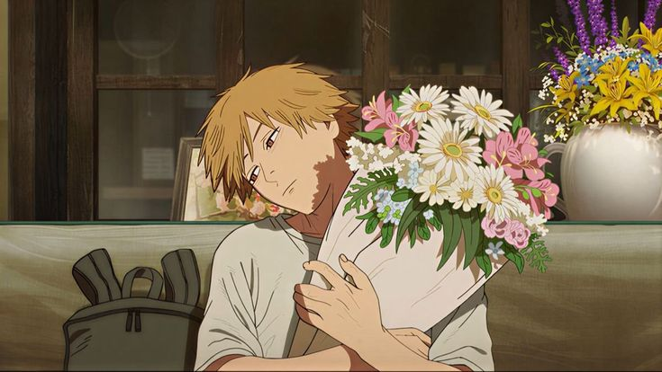

Trailer :
Genres :
- Action et Horreur
- Comédie Noire et Drame
- Dark Fantasy
- Surnaturel et Thriller
Synopsis :
Dans un monde où les démons naissent des peurs humaines, Denji, un adolescent endetté et miséreux, survit en chassant des démons avec son chien-tronçonneuse, Pochita.
Trahi et tué par la Yakuza, il fusionne avec son compagnon pour renaître en Chainsaw Man, un hybride capable de transformer son corps en armes meurtrières.
Recruté par la Sécurité Publique, une agence gouvernementale dirigée par la mystérieuse Makima, Denji combat désormais des menaces infernales tout en cherchant désespérément à accomplir ses rêves les plus simples.
Cependant, il découvre rapidement que ses nouveaux alliés et ennemis cachent des agendas bien plus sombres qu'il ne l'imaginait.
Personnages :
Denji
Denji est un jeune homme simple d'esprit, motivé uniquement par des désirs basiques comme manger à sa faim et toucher une fille, suite à une vie de pauvreté extrême. Après sa fusion avec Pochita, il gagne une force surhumaine mais reste naïf, manipulé par ceux qui l'entourent pour leurs propres fins. Son caractère brut et honnête contraste avec la cruauté du monde qui l'entoure.
Aki Hayakawa
Aki Hayakawa est un chasseur de démons expérimenté et stoïque, qui a rejoint la Sécurité Publique pour venger sa famille détruite par le Démon-Fusil. Bien que froid et discipliné au travail, il développe progressivement un lien fraternel protecteur envers Denji et Power. Il utilise des contrats avec des démons pour augmenter sa puissance, au prix de sa propre espérance de vie.
Power
Power est une démoniaque (Fiend) issue du Démon-Sang, caractérisée par son arrogance, ses mensonges éhontés et son mépris initial pour les humains. Elle possède la capacité de manipuler son sang pour créer des armes et se régénérer, tant qu'elle en consomme suffisamment. Malgré son égoïsme affiché, elle finit par développer une loyauté inattendue envers ses coéquipiers et son chat.
Makima
Makima est la cheffe charismatique et énigmatique de la division de la Sécurité Publique où sert Denji, traitant ce dernier tantôt comme un égal, tantôt comme un animal de compagnie. D'apparence bienveillante et calme, elle cache une intelligence stratégique redoutable et un pouvoir de contrôle absolu sur ceux qu'elle domine. Ses véritables objectifs restent flous, faisant d'elle la personne la plus dangereuse de l'entourage de Denji.
Reze
Reze est une jeune fille mystérieuse travaillant dans un café, qui se lie d'amitié avec Denji et devient son premier véritable intérêt amoureux. Sous cette apparence innocente se cache une hybride démoniaque envoyée par une puissance étrangère pour capturer le cœur de Chainsaw Man. Son arc explore la tragédie de deux individus cherchant une vie normale dans un monde qui les force à se battre.
Anime :
Saison 1 :
12 épisodes
Film
Reze Arc
Manga :
Nombre total de tomes : 20
Statut : en cours de publication
Auteur : Tatsuki Fujimoto
Note :
7/10
Commentaire :
Help j'arrive pas à avoir un attachement avec l'anime, ptet ça viendra plus tard, mais sinon de ce qu'on a vu l'histoire est cool, c'est original, l'animation est magnifique, le film est très bien, je l'ai préféré à l'anime carrément.
l